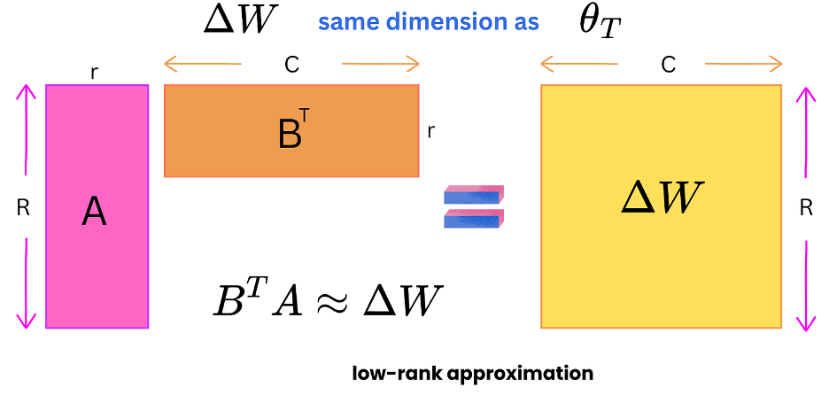

| Model | Trainable Parameters |
|---|---|
| Fine-tuning | ~110M (full model) |
| Adapter | ~1-3M (adapter layers only) |
| LoRA | ~0.1M (low-rank matrices) |
Adapter Tuning
Improve
🔥 Challenges of Fine-tuning Transformers 🔥
- High Compute Costs: Training is expensive and slow.
- Huge Storage Needs: Billions of parameters require massive storage.
- Catastrophic Forgetting: Models can forget prior knowledge.
- Data Hungry: Requires extensive task-specific data.
- Hyperparameter Sensitivity: Difficult to tune optimally.
Adapter Overview
Gradient decent update
θt ← θt-1 - α∇θℒ|θ=θt-1
trained model
θT = θ0 - α∇θℒ|θ=θ0 - α∇θℒ|θ=θ1 ... - α∇θℒ|θ=θT-1
A fine-tuned model
θF =
θ0 − α ΣT-1 ∇θℒ|θ=θt
trained model
− α ΣT+F ∇θℒ|θ=θt
fine-tuning data
LoRA

- ΔW has R x C = 10K x 20K = 200M elements
- B has R x r = 10K x 4 = 40K elements
- A has r x C= 20K x 4 = 80K elements
Overview of Adapter Types
Introduction
Adapters are a recent innovation in transfer learning for NLP that offer a lightweight alternative to fine-tuning. This section provides an overview of common adapter architectures.
Houlsby Adapter
Inserts two adapter layers after the feed-forward network within each transformer block.
- Placement: After both the attention layer and the FFN layer.
- Design: Bottleneck architecture with two layers, one down-projecting and one up-projecting.
- Pros: Relatively high performance.
- Cons: Adds more parameters compared to other adapter types.
Bottleneck Adapter (Pfeiffer Adapter)
The most common type, adds a bottleneck adapter after the feed-forward layer of each transformer block.
- Placement: After FFN or the attention layer.
- Design: Down-projects the input to a smaller dimension, applies a non-linearity, and then up-projects back to the original dimension.
- Pros: Good performance-parameter efficiency trade-off.
- Cons: Might be less effective for tasks heavily relying on attention mechanisms.
Parallel Adapter
Adds an adapter in parallel to the feed-forward network or attention layer.
- Placement: Parallel to the FFN or the attention layer.
- Design: Similar to bottleneck adapter but applied in parallel. The outputs are combined, often through addition.
- Pros: Can achieve better performance than sequential adapters.
- Cons: More complex to implement.
LoRA (Low-Rank Adaptation)
Decomposes the weight updates into two smaller, low-rank matrices. Often used to reduce the number of trainable parameters in fine-tuning.
- Placement: In parallel to the weight matrices of different layers (e.g. query, key, value matrices of the attention layer).
- Design: Introduces two matrices A and B. A down-projects, B up-projects, and their product approximates the weight update.
- Pros: Extremely parameter-efficient.
- Cons: Might require careful tuning of the rank hyperparameter.
Parameter Efficiency
Architecture and Placement
Powered by bespoke-touch
Training Process
Powered by bespoke-scale
Advantages
Powered by bespoke-bullets
- Efficiency and storage
- Multitask learning
- Transfer and reinforcement scenarios
Connection to pruning and knowledge distillation
Powered by Lea Verou's Prism
function hanoi (n, a, b, c) {
return n ? hanoi(n - 1, a, c, b)
.concat([[a, b]])
.concat(hanoi(n - 1, c, b, a)) : []
}
console.log(hanoi(3, 'left', 'right', 'mid')
.map((d) => `${d[0]} -> ${d[1]}`))